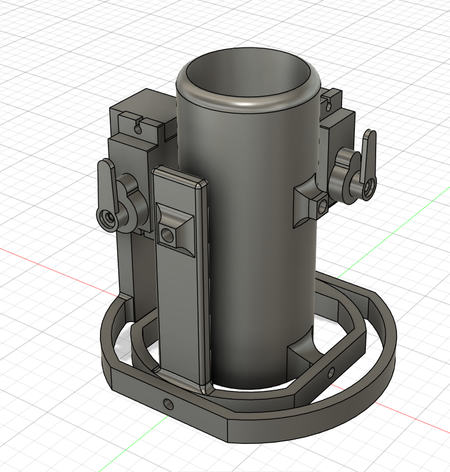
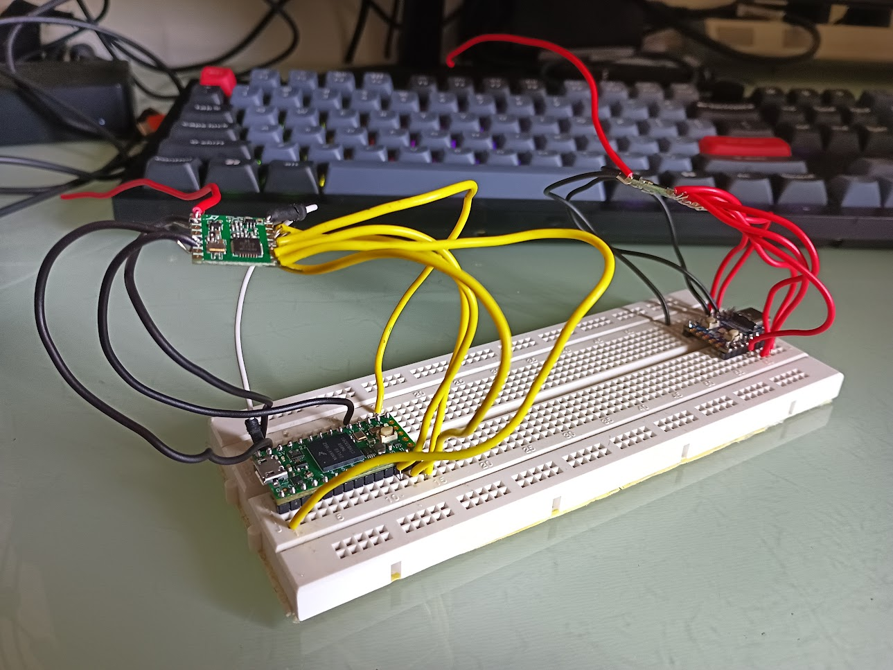

June - August 2024
Dev Log 20
Project Update - June 2024
Progress in June was minimal because of an Internship I was doing at a company called Global Aerosports. In my internship I designed and built a high power rocket (similar to Air MK1) and CanSat hardware.
In other news I designed a TVC mount! It's an onion gimbal half mount (fig 1). With my first version I made the range of motion too small (only 2°), fixed that with v2.

Also tested out the RFM69HCW communication (fig 2) between a Teensy (for the pad computer), and an RP2040 (pad remote).

Project Update - July 2024
Like June I worked a lot on my internship so general progress has been slow. Only thing I did this month is refine the TVC mount and fully print and test it. And it works great, like really great!
Project Update - August 2024
Completely switched up on my existing TVC system this month. I switched from using 74mm airframes to a 66mm airframe to save mass. Trying to make the half mount 66mm compatible was a challenge, and a challenge I could not overcome. So I switched from this mount architecture to a compliant mount. Basically rather than having two gimbals and a different gimballing point per axis, you don't have gimbals at all. Instead you have a compliant joint and two servos that "pull" or "push" the motor tube. Very similar to how TVC is done in the real space industry.
My own compliant mount uses a 3D printed TPU joint, motor tube, and upper plate with the X and Y servos stacked on top of each other.